Enunciamos las reglas de derivación y de la cadena y proporcionamos algunos ejemplos de su aplicación.
Índice:
La función derivada de es un límite:
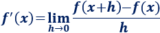
Calcular la derivada de una función a partir del límite requiere un trabajo y tiempo innecesarios.
Las reglas de derivación y la regla de la cadena permiten calcular derivadas sin necesidad de utilizar límites.
En adelante, para abreviar las reglas, escribiremos las funciones y sus derivadas como y , respectivamente.
Asumimos que conocemos las derivadas elementales (las de la tabla).
Las reglas de derivación son las derivadas de la suma, resta, producto y cociente de funciones:
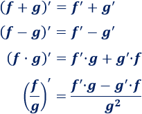
Además, si es una constante, entonces
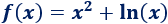
Aplicamos la regla de la suma:
 = x^2 + ln(x) es f'(x) = 2x + 1/x")
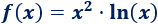
Aplicamos la regla del producto:
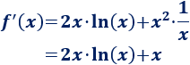
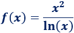
Aplicamos la regla del cociente:
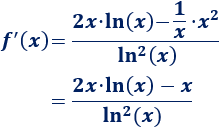
La regla de la cadena sirve para derivar la composición de funciones.
La derivada de la composición es
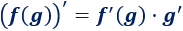
Es decir,
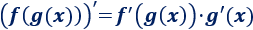
Sea la función
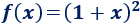
Es composición de las siguientes funciones:
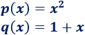
ya que
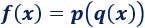
O, equivalentemente, .
Las derivadas son
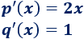
Por tanto, por la regla de la cadena,
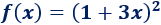
Aplicando la regla de la cadena, la derivada es la derivada del cuadrado por la derivada del paréntesis:
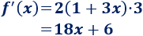
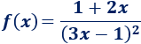
Tenemos que aplicar la regla del cociente y de la cadena (para el cuadrado):
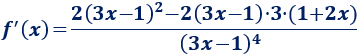
Simplificamos:
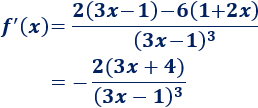
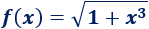
Si es necesario, se puede escribir la raíz como una potencia con exponente .
Aplicando la regla de la cadena,
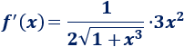
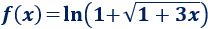
Aplicando la regla de la cadena,
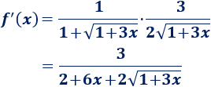
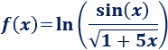
Por las propiedades de los logaritmos,
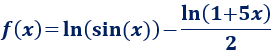
Por tanto,
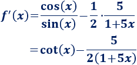